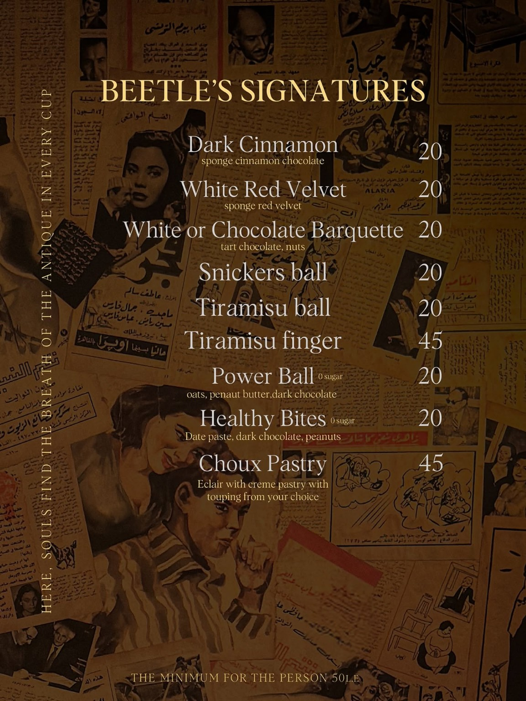

MORE THAN JUST A CAFÉ
What’s behind us
There is a hidden distance between two times… just one step is enough to take you back to an era that was more elegant, more honest, and more full of life. The past never leaves… it simply waits for someone to open the door.
There… in Beetle. Not just a café, but an old house — the very first home — with walls that still breathe. You walk in as a guest… and walk out as part of the family. Suddenly, you find yourself in the 1950s, surrounded by walls that whisper stories, laughter that never faded, and memories still alive.
Coffee at Beetle is not just a drink… it is like a close friend: a taste of comfort, of safety, a warmth that embraces you before it warms you. Every corner holds a memory, every chair has heard a story, and every leaf falling on a table has witnessed a moment that will never be repeated.
My journey with Beetle began with a small cart on the street, serving coffee scented with love. Step by step… the dream grew, and became a home with two branches. Yet the soul remained the same… the soul of beginnings, the spirit of passion.
There are years of struggle, of joy, of challenge… years of pouring my own soul into this place, until it became more than a café — it became my home. And my home will never close… it will always be open to anyone searching for a memory, a moment of truth, or a cup of coffee that holds you before it warms you.
Beetle is not just a name. Beetle is a heartbeat… a story… and a house that will always remember everyone who came in, who shared a laugh, or lived a moment inside its walls.
SINCE 2017